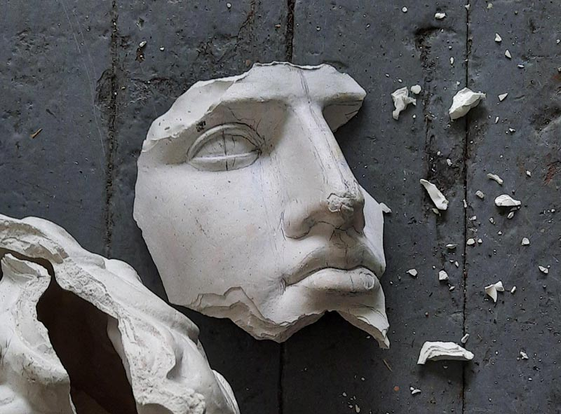
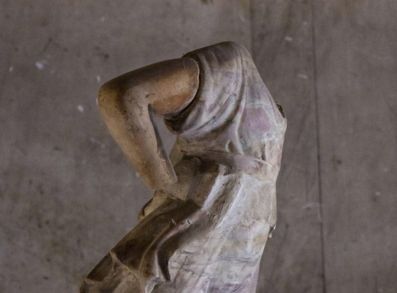
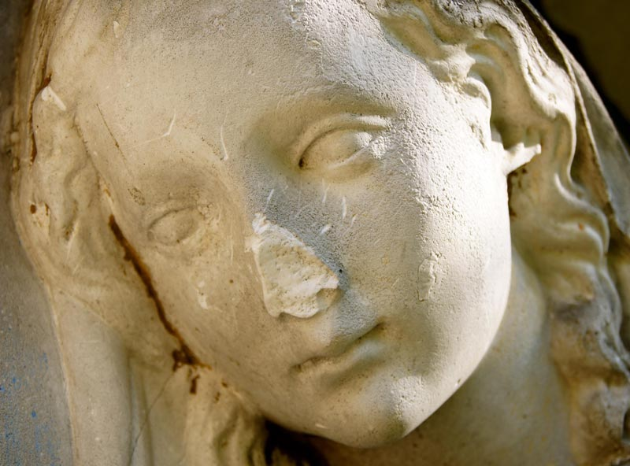
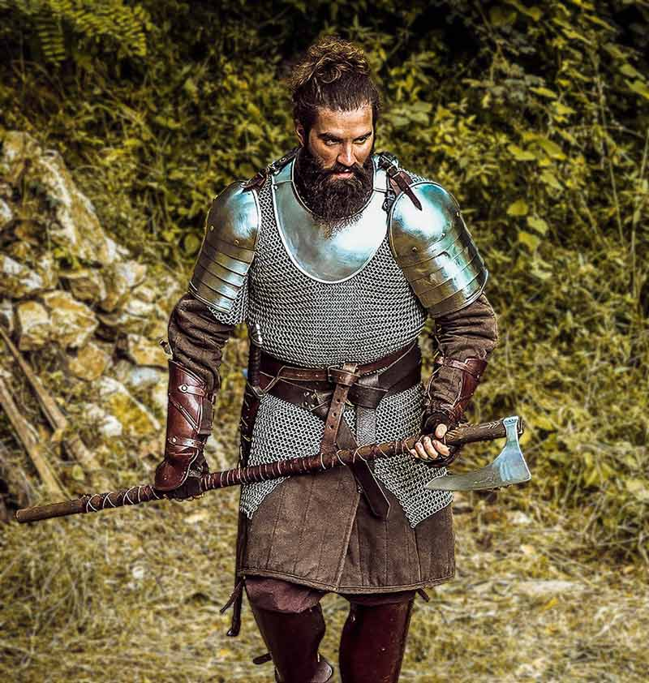

In the third phase of this year, a messenger entered Petriford Village to find
that the residents had been struck with a curse. Every man, woman, and child in
the village has been transformed into a figure of stone—unable to move or speak
until five years’ time has passed.
A brave adventuring party has set out to find the magic-user responsible, but in the
meantime, the frozen villagers are left vulnerable to vandalism, theft, and the
elements. We of The Statue Sanctuary seek for brave men, able in body and noble in
spirit, to defend the helpless until they can once again help themselves.
Fifty years ago, Ailmere City fell victim to the same curse that afflicts Petriford today.
The residents were given up for dead. Soon, bandits and superstitious cowards descended
upon the village, looting property and wreaking terrible violence upon the statues. Exactly
five years later, the curse faded, and the frozen villagers returned to flesh. Only a small
handful of survivors remained, left to mourn their fallen kinsman in the ruins of their
once-beautiful town.
We, the brethren and neighbors of Petriford’s people, cannot allow this tragedy to happen
again. By maintaining a constant guard, we can be the defenders of the helpless, warding
away the villains who would harm them. Whether you volunteer for one month or many, one
thing is certain—the fate of Petriford’s people is in your hands.



Minimizing Risk
This task is not without its dangers, but The Statue Sanctuary has taken pains to ensure
that Petriford’s guardians are safe and successful in their task. Ardent Steelsong, former
mercenary and Hero of the North, has volunteered to train all recruits in the arts of swordplay
and defense. All volunteers begin their service with three brief but thorough days of
instruction, and the training is continued periodically throughout their entire stay.
We have also taken many additional measures. Basic weaponry and armor are provided, and
guards are deployed in teams of four, so no man is ever caught unawares. Bonfires will be lit
at night to illuminate the surrounding area. These preparations will deter all but the
foolhardiest of villains.

Compensation
We recognize that many of our volunteers are valiant husbands and fathers who have a home
to provide for. We certainly could never ask these men to abandon the needs of their own kin!
In addition to food, armor, and bedding, each volunteer will receive the equivalent of a modest
living wage from our pool of donated coin. This usually amounts to 50 copper coins per week,
but for t0000hose with large families or other obligations, arrangements can be made for more.
There are also some men who travel great distances to stand guard at Petriford. In preparation,
we have repurposed Petriford’s inn and meeting hall to serve as living quarters for all but those
who live in the closest towns.